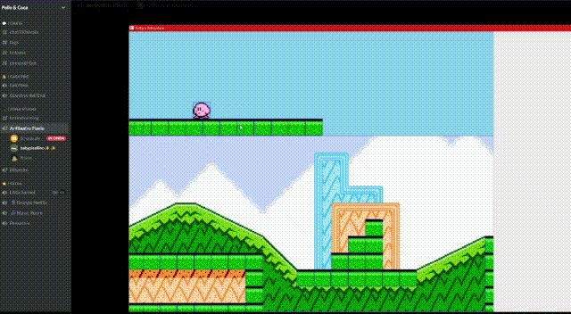

L'approccio più intuitivo
I livelli sono stati creati utilizzando il motore grafico stesso, piazzando i blocchi singolarmente sullo sfondo o raggruppandoli.
Questo è stato possibile sfruttando il sistema di salvataggi che permette di editare i livelli.

Sono stati inseriti i blocchi e successivamente vi è stata rimossa la texture lasciando l'illusione di uno sfondo solido.